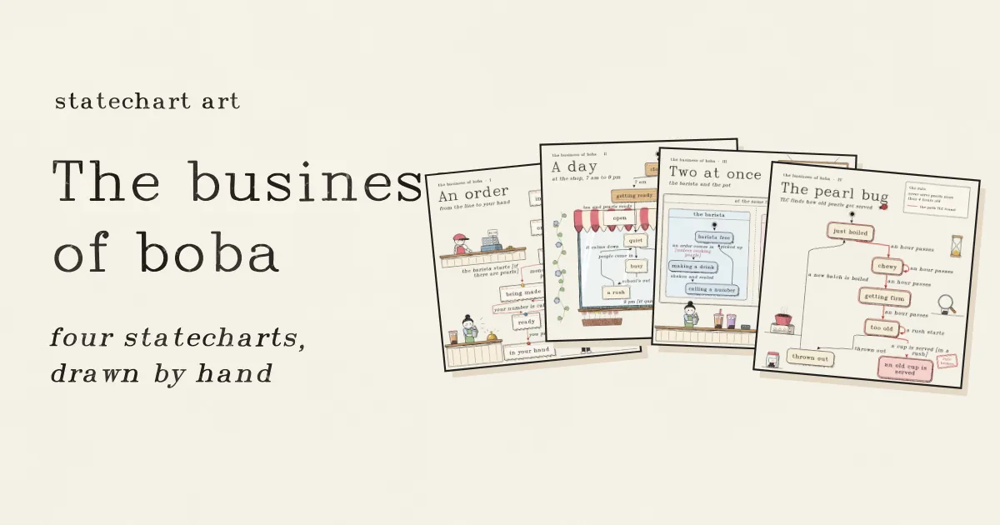
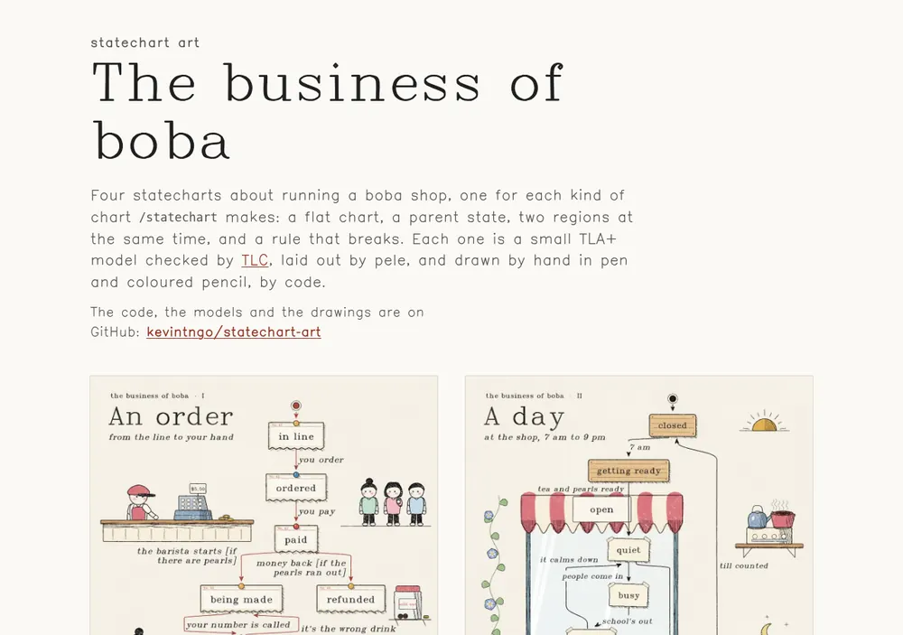
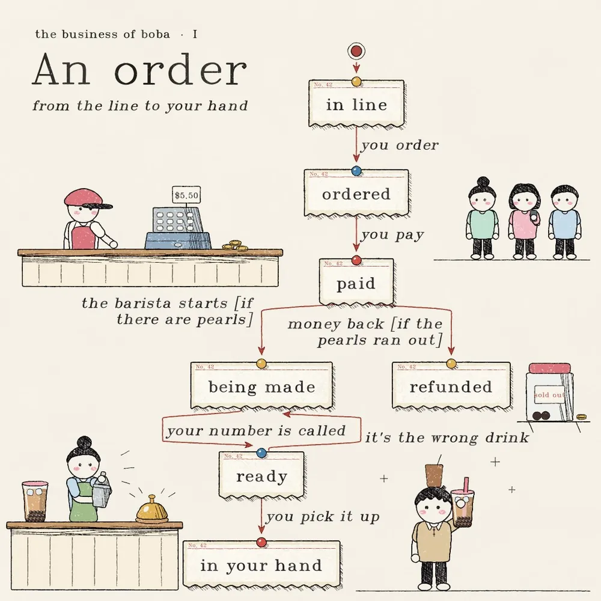
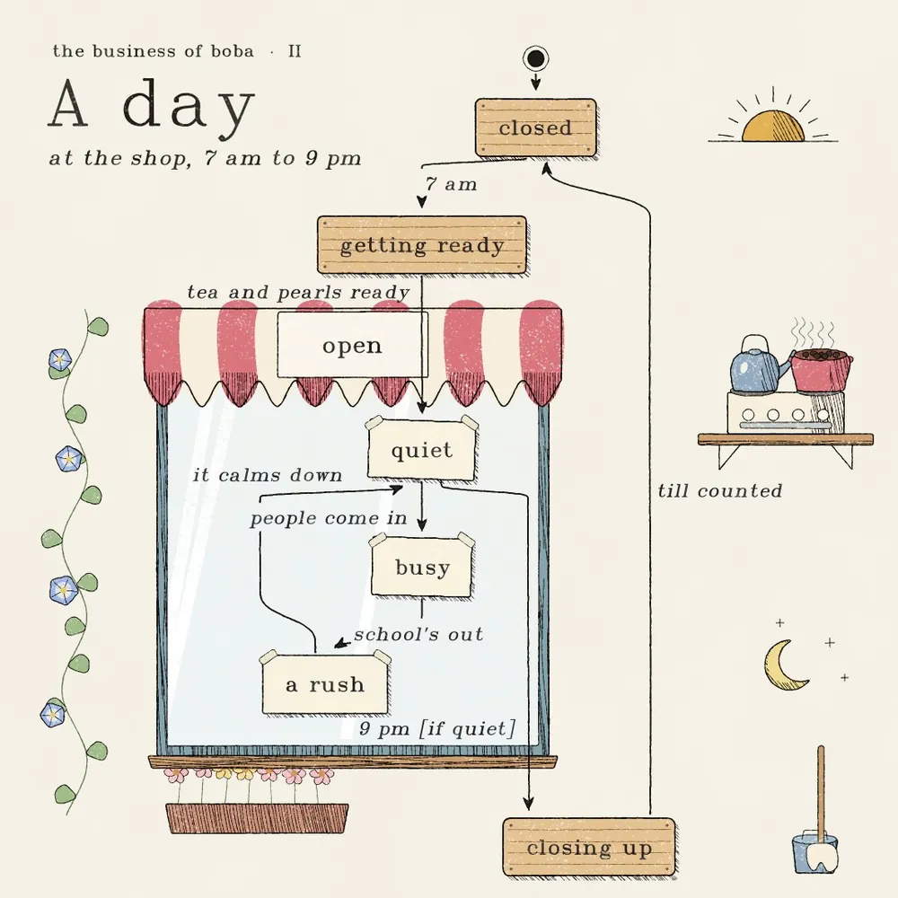
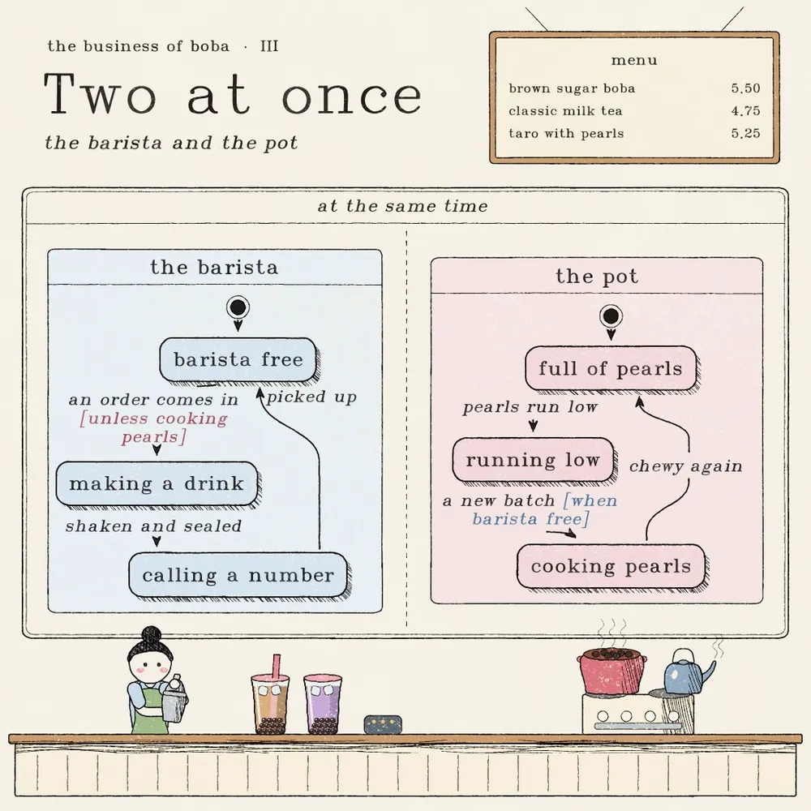
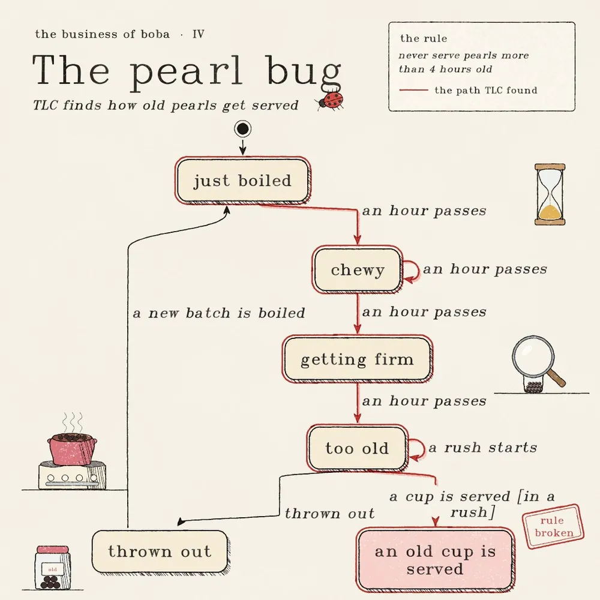
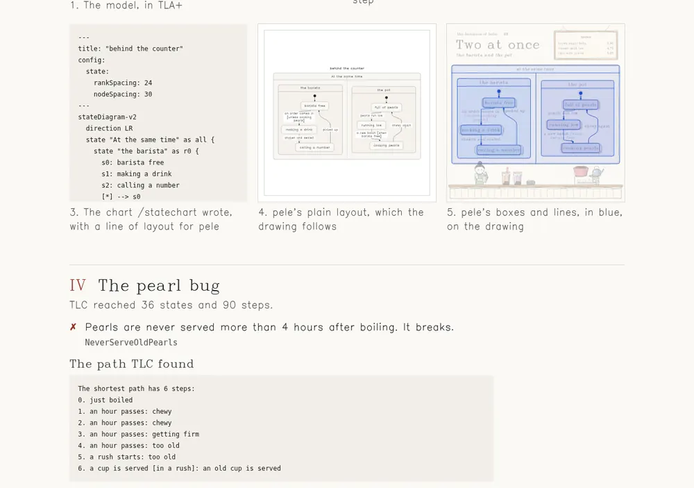

它是什么
- 作品：《The business of boba》（珍珠奶茶店的生意），四张正方形“图版”，每张对应一种状态图写法：平面图（带分支和回环）、父状态、并行区域、一条会被打破的规则。
- 流程：TLA+ 模型 →
/statechartSkill 调 TLC 穷举检查并写出 Mermaid 状态图 → pele 排版并按画里用的字体测量每个词 → 每张图一段 JavaScript，用模拟的纸、钢笔、彩铅逐像素画出，并在状态图周围画满奶茶店的物件。 - 为什么值得看：状态图通常是写给工程师的，这里把它变成给“懂业务的人”看的画——而画里的每个框和每根线都对应一个被机器穷举检查过的模型，不是凭空画的示意图。第四张图把“规则被打破”和“怎么一步步走到那里”直接画进图里。
- 许可：MIT，作者明确写明覆盖“代码、模型、画和字体”全部内容。因此本页可以全文翻译并转载四张图（转 webp）。

正文全译 · 四张图
以下按原页顺序全文翻译。图中的英文文字保留原样；图注下方的“画面”是原页图片替代文字（alt）的译文。
statechart art
珍珠奶茶店的生意
四张关于经营一家珍珠奶茶店的状态图，
/statechart能画的四种图各一张：一张平面图，一个父状态，两个同时运行的区域，以及一条会被打破的规则。每一张都是一个小小的 TLA+ 模型，由 TLC 检查，由 pele 排版，再由代码用钢笔和彩色铅笔“手绘”出来。代码、模型和画都在 GitHub 上：kevintngo/statechart-art

一张平面图，带一个分支和一个回环。每个状态是一张钉起来的点单小票，每一步是两枚图钉之间的一根红线，每一步的说明写在线旁。
画面：钢笔与彩铅画，标题“一张订单，从排队到你手里”。状态图画成用彩色图钉钉起、由红线相连的纸质点单小票：排队中；你点单，到已点单；你付款，到已付款。从已付款出发，如果还有珍珠，店员开始做，到制作中；如果珍珠卖完了，退钱，到已退款。从制作中，叫到你的号，到可取餐。从可取餐，做错了饮料就回到制作中，你取走则到“在你手里”。图的周围：三位排队的顾客；柜台后的收银员，收银机显示 5.50，旁边几枚硬币；在服务铃和一杯做好的饮料旁摇饮料的店员；架子上一罐标着“售罄”的珍珠和一枚硬币；还有一个短黑卷发、穿米色 polo 衫、头顶一杯冰咖啡的人，举着一杯珍珠奶茶。

带父状态的图。“营业中”是一个父状态，里面有三个状态，所以把它画成店铺橱窗：清闲、忙碌和高峰是贴在玻璃上的便条，其他状态是木牌。
画面：钢笔与彩铅画，标题“一天，店里，早 7 点到晚 9 点”。状态图画成一个店面。打烊、准备中、收尾是木牌；营业中是条纹遮阳棚下的橱窗，清闲、忙碌、高峰是贴在玻璃上的便条。早 7 点，打烊变为准备中；茶和珍珠备好，进入营业中，到清闲；有人进来，到忙碌；放学了，到高峰；人少下来，回到清闲；晚 9 点、若清闲，到收尾；钱箱点完，回到打烊。图的周围：日出；架子上，炉子上的水壶和一锅珍珠；月亮和星星；桶里的拖把；一株牵牛花藤，以及窗下的一盆花。

两个区域，同时运行。店员和锅各走各的，并排前进。需要等另一个区域的那一步，会在方括号里写明，并涂成它所等的那个区域的颜色。
画面：钢笔与彩铅画，标题“同时进行，店员与锅”。在一块菜单板下，状态图在一个标着“同时”的框里并排画出两个区域。店员：店员空闲；来了一单（除非正在煮珍珠），到做饮料；摇好封口，到叫号；被取走，回到店员空闲。锅：珍珠满满；珍珠快没了，到所剩不多；煮新一锅（当店员空闲时），到煮珍珠中；又 Q 弹了，回到珍珠满满。每个条件都涂成它所指区域的颜色。下方，柜台后一位店员在摇饮料，旁边两杯做好的饮料和一个取餐呼叫器；炉子上放着一锅珍珠和一个水壶。

一条会被打破的规则，以及通往它的路。TLC 找到了打破规则的办法：高峰时段，没人检查珍珠放了多久。图上标出了违反规则的状态，通往它的最短路径用红色描出。
画面：钢笔与彩铅画，标题“珍珠 bug，TLC 发现老珍珠是怎么被端出去的”。一张卡片写着规则：煮好超过 4 小时的珍珠绝不出售。状态图：刚煮好；过了一小时，到 Q 弹，这里还会再过几小时；过了一小时，到开始变硬；过了一小时，到太老了，这时来了一波高峰。从太老了出发，“倒掉”通向已倒掉，“煮新一锅”又回到刚煮好；但“高峰中端出一杯”通向“端出了一杯老珍珠”，这个状态上盖着“规则被打破”的章。TLC 找到的路径——从刚煮好、经过太老了、到那杯老珍珠——用红色描出。图的周围：一只瓢虫、一个沙漏、一只罩在一杯老珍珠上的放大镜、炉子上的一锅珍珠，以及一罐老珍珠。
正文全译 · 它们是怎么做出来的
TLC 是什么
每张图都从一个 TLA+ 模型开始。TLA+ 是一种描述事物如何一步一步运作的语言：从哪里开始，下一步可以走哪些步。TLC 是检查 TLA+ 模型的程序。
测试只试几种情况，TLC 把所有情况都试一遍。它从第一个状态出发，走每一个可能发生的步，再走那之后每一个可能的步，直到见过模型能到达的每一个状态。在每个状态里，它都检查规则，比如“每一杯正在做的饮料都已经付过钱”。如果某条规则会被打破，TLC 会找出打破它的最短步骤序列。珍珠 bug 上的红色路径就是这样来的：高峰时段，没人检查珍珠放了多久。
- 建模。几行 TLA+ 写下店里可能发生什么，以及哪些规则必须始终成立。
- 检查。
/statechart让 TLC 走遍模型能到达的每一个状态，并在每个状态里检查每条规则。某条规则被打破时，它找出通往那里的最短路径。 - 选词。一个“视图”规定读者在每个状态、每一步看到什么话。它也决定图的种类：平面图返回一个词，父状态返回一个列表，并行区域返回一个对象。
- 排版。pele 为 Mermaid 图排版，用画里实际使用的字体去量每一个词。
- 作画。一个程序把 pele 的方框和线画成奶茶店里的东西——小票、木牌、便条、卡片——用模拟的钢笔和彩色铅笔，并在周围画满店里的景物。文字落在干净的纸面上，箭头在碰到所指之物前停住。下面每张图的最后一格，把 pele 的方框和线用蓝色叠在成画上。

I 一张订单
TLC 走到了 13 个状态、17 步。
- ✓ 每一杯正在做、已做好或已交出的饮料都付过钱。
PaidForEveryDrink - ✓ 退款的订单拿回了钱。
RefundsGiveMoneyBack
1. 模型（TLA+，Order.tla）
---- MODULE Order ----
EXTENDS Naturals
VARIABLES order, paid, pearls, remakes
vars == <<order, paid, pearls, remakes>>
Init ==
/\ order = "in line"
/\ paid = FALSE
/\ pearls = "plenty"
/\ remakes = 0
YouOrder ==
/\ order = "in line"
/\ order' = "ordered"
/\ UNCHANGED <<paid, pearls, remakes>>
YouPay ==
/\ order = "ordered"
/\ order' = "paid"
/\ paid' = TRUE
/\ UNCHANGED <<pearls, remakes>>
PearlsRunOut ==
/\ pearls = "plenty"
/\ order \in {"in line", "ordered", "paid"}
/\ pearls' = "out"
/\ UNCHANGED <<order, paid, remakes>>
BaristaStarts ==
/\ order = "paid"
/\ pearls = "plenty"
/\ order' = "being made"
/\ UNCHANGED <<paid, pearls, remakes>>
MoneyBack ==
/\ order = "paid"
/\ pearls = "out"
/\ order' = "refunded"
/\ paid' = FALSE
/\ UNCHANGED <<pearls, remakes>>
NumberCalled ==
/\ order = "being made"
/\ order' = "ready"
/\ UNCHANGED <<paid, pearls, remakes>>
WrongDrink ==
/\ order = "ready"
/\ remakes < 1
/\ order' = "being made"
/\ remakes' = remakes + 1
/\ UNCHANGED <<paid, pearls>>
YouPickItUp ==
/\ order = "ready"
/\ order' = "in your hand"
/\ UNCHANGED <<paid, pearls, remakes>>
Done ==
/\ order \in {"in your hand", "refunded"}
/\ UNCHANGED vars
Next ==
\/ YouOrder \/ YouPay \/ PearlsRunOut \/ BaristaStarts \/ MoneyBack
\/ NumberCalled \/ WrongDrink \/ YouPickItUp \/ Done
Spec == Init /\ [][Next]_vars
TypeOK ==
/\ order \in {"in line", "ordered", "paid", "being made", "ready", "in your hand", "refunded"}
/\ paid \in BOOLEAN
/\ pearls \in {"plenty", "out"}
/\ remakes \in 0..1
PaidForEveryDrink == order \in {"being made", "ready", "in your hand"} => paid
RefundsGiveMoneyBack == order = "refunded" => ~paid
NoDrinkWithoutPearls == order = "being made" => pearls = "plenty" \/ remakes > 0
====2. 视图：读者在每个状态、每一步看到的文字
export const title = "an order of boba";
export const state = (v) => v.order;
const STEPS = {
YouOrder: "you order",
YouPay: "you pay",
PearlsRunOut: "the pearls run out",
BaristaStarts: "the barista starts [if there are pearls]",
MoneyBack: "money back [if the pearls ran out]",
NumberCalled: "your number is called",
WrongDrink: "it's the wrong drink",
YouPickItUp: "you pick it up",
Done: "you drink it",
};
export const step = (action) => STEPS[action];view.mjs）：给每个状态和每一步配上读者看到的话3. /statechart 写出的图（Mermaid）
---
title: "an order of boba"
config:
state:
rankSpacing: 26
nodeSpacing: 60
---
stateDiagram-v2
s0: in line
s1: ordered
s2: paid
s3: being made
s4: ready
s5: refunded
s6: in your hand
[*] --> s0
s0 --> s1: you order
s1 --> s2: you pay
s2 --> s3: the barista starts [if there are pearls]
s3 --> s4: your number is called
s2 --> s5: money back [if the pearls ran out]
s4 --> s3: it's the wrong drink
s4 --> s6: you pick it up原页每张图还有第 4、5 格：pele 的朴素排版（画就照着它来），以及把 pele 的方框和线用蓝色叠在成画上。这两格是原页内嵌的 SVG，本页不重绘，见上方原页截图或原页对应处。
II 一天
TLC 走到了 8 个状态、9 步。
- ✓ 只有茶泡好、珍珠煮好之后才开门营业。
OpenOnlyWhenReady - ✓ 只有店里没人时才收尾。
CloseOnlyWhenEmpty - ✓ 拖完地才点钱箱。
CountAfterMopping
1. 模型（TLA+，Day.tla）
---- MODULE Day ----
VARIABLES phase, teaReady, pearlsReady, crowd, mopped
vars == <<phase, teaReady, pearlsReady, crowd, mopped>>
Phases == {"closed", "brewing", "boiling", "quiet", "busy", "rush", "cleaning", "counting"}
Init ==
/\ phase = "closed"
/\ teaReady = FALSE
/\ pearlsReady = FALSE
/\ crowd = 0
/\ mopped = FALSE
Unlock ==
/\ phase = "closed"
/\ phase' = "brewing"
/\ UNCHANGED <<teaReady, pearlsReady, crowd, mopped>>
TeaSteeped ==
/\ phase = "brewing"
/\ phase' = "boiling"
/\ teaReady' = TRUE
/\ UNCHANGED <<pearlsReady, crowd, mopped>>
DoorsOpen ==
/\ phase = "boiling"
/\ phase' = "quiet"
/\ pearlsReady' = TRUE
/\ UNCHANGED <<teaReady, crowd, mopped>>
PeopleComeIn ==
/\ phase = "quiet"
/\ phase' = "busy"
/\ crowd' = 1
/\ UNCHANGED <<teaReady, pearlsReady, mopped>>
SchoolLetsOut ==
/\ phase = "busy"
/\ phase' = "rush"
/\ crowd' = 2
/\ UNCHANGED <<teaReady, pearlsReady, mopped>>
RushPasses ==
/\ phase = "rush"
/\ phase' = "quiet"
/\ crowd' = 0
/\ UNCHANGED <<teaReady, pearlsReady, mopped>>
DoorsClose ==
/\ phase = "quiet"
/\ crowd = 0
/\ phase' = "cleaning"
/\ UNCHANGED <<teaReady, pearlsReady, crowd, mopped>>
FloorMopped ==
/\ phase = "cleaning"
/\ phase' = "counting"
/\ mopped' = TRUE
/\ UNCHANGED <<teaReady, pearlsReady, crowd>>
TillAddsUp ==
/\ phase = "counting"
/\ phase' = "closed"
/\ teaReady' = FALSE
/\ pearlsReady' = FALSE
/\ mopped' = FALSE
/\ UNCHANGED crowd
Next ==
\/ Unlock \/ TeaSteeped \/ DoorsOpen \/ PeopleComeIn \/ SchoolLetsOut
\/ RushPasses \/ DoorsClose \/ FloorMopped \/ TillAddsUp
Spec == Init /\ [][Next]_vars
TypeOK ==
/\ phase \in Phases
/\ teaReady \in BOOLEAN
/\ pearlsReady \in BOOLEAN
/\ crowd \in {0, 1, 2}
/\ mopped \in BOOLEAN
OpenOnlyWhenReady == phase \in {"quiet", "busy", "rush"} => teaReady /\ pearlsReady
CloseOnlyWhenEmpty == phase \in {"cleaning", "counting"} => crowd = 0
CountAfterMopping == phase = "counting" => mopped
====2. 视图：读者在每个状态、每一步看到的文字
export const title = "a day at the shop";
const PATH = {
closed: ["closed"],
brewing: ["getting ready"],
boiling: ["getting ready"],
quiet: ["open", "quiet"],
busy: ["open", "busy"],
rush: ["open", "a rush"],
cleaning: ["closing up"],
counting: ["closing up"],
};
export const state = (v) => PATH[v.phase];
const STEPS = {
Unlock: "7 am",
TeaSteeped: "tea steeped",
DoorsOpen: "tea and pearls ready",
PeopleComeIn: "people come in",
SchoolLetsOut: "school's out",
RushPasses: "it calms down",
DoorsClose: "9 pm [if quiet]",
FloorMopped: "floor mopped",
TillAddsUp: "till counted",
};
export const step = (action) => STEPS[action];view.mjs）：给每个状态和每一步配上读者看到的话3. /statechart 写出的图（Mermaid）
---
title: "a day at the shop"
config:
state:
rankSpacing: 26
nodeSpacing: 34
---
stateDiagram-v2
direction TB
s0: closed
s1: getting ready
state "open" as s2 {
direction TB
s3: quiet
s4: busy
s5: a rush
}
s6: closing up
[*] --> s0
s0 --> s1: 7 am
s1 --> s3: tea and pearls ready
s3 --> s6: 9 pm [if quiet]
s3 --> s4: people come in
s4 --> s5: school's out
s6 --> s0: till counted
s5 --> s3: it calms down原页每张图还有第 4、5 格：pele 的朴素排版（画就照着它来），以及把 pele 的方框和线用蓝色叠在成画上。这两格是原页内嵌的 SVG，本页不重绘，见上方原页截图或原页对应处。
III 同时进行
TLC 走到了 7 个状态、11 步。
- ✓ 锅里在煮珍珠时，店员绝不在做饮料。
NoDrinkWhileCooking
1. 模型（TLA+，Counter.tla）
---- MODULE Counter ----
VARIABLES barista, pot
vars == <<barista, pot>>
Init ==
/\ barista = "free"
/\ pot = "full"
OrderComesIn ==
/\ barista = "free"
/\ pot # "cooking"
/\ barista' = "making"
/\ UNCHANGED pot
ShakenAndSealed ==
/\ barista = "making"
/\ barista' = "calling"
/\ UNCHANGED pot
PickedUp ==
/\ barista = "calling"
/\ barista' = "free"
/\ UNCHANGED pot
PearlsRunLow ==
/\ pot = "full"
/\ pot' = "low"
/\ UNCHANGED barista
NewBatch ==
/\ pot = "low"
/\ barista = "free"
/\ pot' = "cooking"
/\ UNCHANGED barista
ChewyAgain ==
/\ pot = "cooking"
/\ pot' = "full"
/\ UNCHANGED barista
Next == OrderComesIn \/ ShakenAndSealed \/ PickedUp \/ PearlsRunLow \/ NewBatch \/ ChewyAgain
Spec == Init /\ [][Next]_vars
TypeOK ==
/\ barista \in {"free", "making", "calling"}
/\ pot \in {"full", "low", "cooking"}
NoDrinkWhileCooking == barista # "free" => pot # "cooking"
====2. 视图：读者在每个状态、每一步看到的文字
export const title = "behind the counter";
const BARISTA = { free: "barista free", making: "making a drink", calling: "calling a number" };
const POT = { full: "full of pearls", low: "running low", cooking: "cooking pearls" };
export const state = (v) => ({ "the barista": BARISTA[v.barista], "the pot": POT[v.pot] });
const STEPS = {
OrderComesIn: "an order comes in",
ShakenAndSealed: "shaken and sealed",
PickedUp: "picked up",
PearlsRunLow: "pearls run low",
NewBatch: "a new batch",
ChewyAgain: "chewy again",
};
export const step = (action) => STEPS[action];view.mjs）：给每个状态和每一步配上读者看到的话3. /statechart 写出的图（Mermaid）
---
title: "behind the counter"
config:
state:
rankSpacing: 24
nodeSpacing: 30
---
stateDiagram-v2
direction LR
state "At the same time" as all {
state "the barista" as r0 {
s0: barista free
s1: making a drink
s2: calling a number
[*] --> s0
s0 --> s1: an order comes in [unless cooking pearls]
s1 --> s2: shaken and sealed
s2 --> s0: picked up
}
--
state "the pot" as r1 {
s3: full of pearls
s4: running low
s5: cooking pearls
[*] --> s3
s3 --> s4: pearls run low
s4 --> s5: a new batch [when barista free]
s5 --> s3: chewy again
}
}原页每张图还有第 4、5 格：pele 的朴素排版（画就照着它来），以及把 pele 的方框和线用蓝色叠在成画上。这两格是原页内嵌的 SVG，本页不重绘，见上方原页截图或原页对应处。
IV 珍珠 bug
TLC 走到了 36 个状态、90 步。
- ✗ 珍珠绝不在煮好 4 小时以后端出。被打破。
NeverServeOldPearls
TLC 找到的路径
最短路径共 6 步：
0. 刚煮好（just boiled）
1. 过了一小时：Q 弹（chewy）
2. 过了一小时：Q 弹（chewy）
3. 过了一小时：开始变硬（getting firm）
4. 过了一小时：太老了（too old）
5. 来了一波高峰：太老了（too old）
6. 端出一杯 [在高峰中]：端出了一杯老珍珠（an old cup is served）1. 模型（TLA+，Bug.tla）
---- MODULE Bug ----
EXTENDS Naturals
VARIABLES age, batch, rush, served
vars == <<age, batch, rush, served>>
Init ==
/\ age = 0
/\ batch = "in the pot"
/\ rush = FALSE
/\ served = "nothing yet"
AnHourPasses ==
/\ batch = "in the pot"
/\ age < 4
/\ age' = age + 1
/\ UNCHANGED <<batch, rush, served>>
ServeACup ==
/\ batch = "in the pot"
/\ served # "an old cup"
/\ (age < 4 \/ rush)
/\ served' = IF age < 4 THEN "a fresh cup" ELSE "an old cup"
/\ UNCHANGED <<age, batch, rush>>
RushStarts ==
/\ ~rush
/\ rush' = TRUE
/\ UNCHANGED <<age, batch, served>>
RushEnds ==
/\ rush
/\ rush' = FALSE
/\ UNCHANGED <<age, batch, served>>
ThrowOut ==
/\ batch = "in the pot"
/\ age = 4
/\ batch' = "thrown out"
/\ UNCHANGED <<age, rush, served>>
NewBatch ==
/\ batch = "thrown out"
/\ batch' = "in the pot"
/\ age' = 0
/\ UNCHANGED <<rush, served>>
Next == AnHourPasses \/ ServeACup \/ RushStarts \/ RushEnds \/ ThrowOut \/ NewBatch
Spec == Init /\ [][Next]_vars
TypeOK ==
/\ age \in 0..4
/\ batch \in {"in the pot", "thrown out"}
/\ rush \in BOOLEAN
/\ served \in {"nothing yet", "a fresh cup", "an old cup"}
NeverServeOldPearls == served # "an old cup"
====2. 视图：读者在每个状态、每一步看到的文字
export const title = "the pearl bug";
const AGE = ["just boiled", "chewy", "chewy", "getting firm", "too old"];
export const state = (v) =>
v.served === "an old cup" ? "an old cup is served"
: v.batch === "thrown out" ? "thrown out"
: AGE[v.age];
const STEPS = {
AnHourPasses: "an hour passes",
ServeACup: "a cup is served",
RushStarts: "a rush starts",
RushEnds: "the rush ends",
ThrowOut: "thrown out",
NewBatch: "a new batch is boiled",
};
export const step = (action, from, to) =>
action === "ServeACup" && to.served === "an old cup" ? "a cup is served [in a rush]" : STEPS[action];view.mjs）：给每个状态和每一步配上读者看到的话3. /statechart 写出的图（Mermaid）
---
title: "the pearl bug"
config:
state:
rankSpacing: 26
nodeSpacing: 40
---
stateDiagram-v2
state "Legend" as legend {
lg0: Breaks NeverServeOldPearls
lg1: Path to the NeverServeOldPearls bug
}
class lg0 breaks
class lg1 bugPath
s0: just boiled
s1: chewy
s2: getting firm
s3: too old
s4: thrown out
s5: an old cup is served
[*] --> s0
s0 --> s1: an hour passes
s1 --> s1: an hour passes
s1 --> s2: an hour passes
s2 --> s3: an hour passes
s3 --> s3: a rush starts
s3 --> s4: thrown out
s3 --> s5: a cup is served [in a rush]
s4 --> s0: a new batch is boiled
classDef breaks fill:#ffecee,stroke:#e72e3b,stroke-width:2.5px,color:#cd2834
class s0 bugPath
class s1 bugPath
class s2 bugPath
class s3 bugPath
class s5 breaks
class s5 bugPath原页每张图还有第 4、5 格：pele 的朴素排版（画就照着它来），以及把 pele 的方框和线用蓝色叠在成画上。这两格是原页内嵌的 SVG，本页不重绘，见上方原页截图或原页对应处。
模型用 TLC（MIT）检查。图由 pele（MIT）排版。字体是 Kevin Serif 和 Kevin Sans，描自 A. V. Hershey 1967 年的字体（公有领域）。代码、模型和画都在 GitHub 上，以 MIT 许可发布。
核实与注记（本站）
- 作者 ✅：仓库全部 6 次提交的作者都署名“Kevin T. Ngo”（GitHub 账号 kevintngo），LICENSE 写 “Copyright (c) 2026 Kevin T. Ngo”，原页
twitter:creator为 @kevin_t_ngo。个人站 kevintngo.com（自称 Creative technologist，作品为 2026 年的短片、生成艺术和小游戏）链接到同一个 X 账号，并使用同一套 Kevin Serif / Kevin Sans 字体 → 同一人 ⚠️ 推断（证据较强）。 - 时间与热度：仓库建于 2026-10-31 04:00（UTC+8），最后推送 2026-10-31 15:08（UTC+8）；本站核对时（约 15:45 UTC+8）★41、6 个 fork，无 issue。
- AI 协作 ✅：每一次提交信息都带
Co-Authored-By: Claude Opus 5.5。也就是说，这套“用代码手绘”的工具链是作者和编码智能体一起写的，原页没有特别说明这一点。 /statechart从哪来 ⚠️：原页和 README 都没写出处。经核，它是 cursor/plugins 里的 pstack 插件中的一个 Skill（作者 Lauren Tan / poteto，MIT，v0.15.36），说明为“检查一个 TLA+ 模型，把用户看到的东西画成 Mermaid 状态图，标出每个违反规则的状态，并给出通往每一个的最短路径”。README 里的命令路径是~/.claude/skills/statechart/…，说明作者把它当 Claude Code Skill 安装 ⚠️ 推断。另一处旁证：April Zhu 的 Field Notes 页写着“Rules checked with /statechart by poteto”。- pele：pele.run 自述为零依赖的 Mermaid→SVG 渲染器，“为 Obsidian 开发”，支持 Mermaid 12.1.0 的全部图种，体积和速度对比数字为官方自报 ⚠️ 未核实。
- 本站复算 ✅（不是跑 TLC）：本机没有 Java，所以没有运行 TLC 本身。本站把四个 TLA+ 模型逐条改写成 Python，从初始状态做广度优先穷举：可达状态数 13 / 8 / 7 / 36 与原页完全一致；“步数”在把自环也计入时（订单图里终态的
Done停顿、珍珠 bug 里重复端出鲜杯）为 17 / 9 / 11 / 90，也一致；NeverServeOldPearls的最短反例正好 6 步，路径与原页相同；其余规则在全部可达状态里都成立。 - 一个小细节：Order 模型里还定义了第三条规则
NoDrinkWithoutPearls（在做的饮料要么还有珍珠、要么是重做），但原页只列了两条。本站复算它同样成立；它是否写进了 TLC 的配置（.cfg），本站没有核对 ⚠️。 - 同仓库新作：2026-10-31 14:35（UTC+8）提交了姊妹页 One becomes two：把一个细胞的分裂周期画成一面竖向滚动的状态图墙（提交信息称 61 个状态、77 步，本站未核 ⚠️）；最后一次提交还加了配乐和“方形滚动视频”渲染器（本站未下载任何视频）。本页以《The business of boba》为中心。
- 下游：April Zhu 的 Field Notes 页注明其“钢笔、铅笔和小人”改编自 statechart-art——本站收录过她的 Open House skill。
- 推广：未见付费、联盟链接或 utm；纯个人作品页。
附录一：README 全文中译
译自仓库 README.md（MIT）。命令与路径保留原文。
珍珠奶茶店的生意
四张关于经营一家珍珠奶茶店的状态图，由代码用钢笔和彩色铅笔“手绘”。每张图都是一个由 TLC 检查的小型 TLA+ 模型，每张的画法都不一样：红线串起的点单小票、一个店面、并排的两张卡片，以及一个用红色描出的 bug。
在线观看：https://kevintngo.github.io/statechart-art/
| 图版 | 图的种类 | |
|---|---|---|
| I | 一张订单，从排队到你手里 | 带分支和回环的平面图 |
| II | 一天，店里，早 7 点到晚 9 点 | 父状态 |
| III | 同时进行，店员与锅 | 同时运行的两个区域 |
| IV | 珍珠 bug，TLC 发现老珍珠是怎么被端出去的 | 一条会被打破的规则，以及通往它的路 |
每张图版都是正方形，大小适合在手机上看。给 x.com 用的图片在 docs/img/。
怎么做的
- 模型。一份 TLA+ 规格写下店里可能发生什么，它的配置文件列出必须成立的规则。
- 图。/statechart Skill 用 TLA+ 模型检查器 TLC 检查规格：从模型能到达的每个状态出发走每一步，并在每个状态里检查每条规则。它用 Mermaid 写出状态图，使用
view.mjs给每个状态和每一步的说法，并写一份报告，列出哪些规则成立、哪些被打破。 - 排版。pele 为图排版，并按 Kevin Serif Bold 测量每个词。
layout.mmd是加上了 pele 间距和方向设置的图。 - 作画。每张图版一个脚本，在纸上用钢笔和彩铅画出 pele 的排版，并在周围画上奶茶店。
重新画出来
作画需要 Node（制作时用的是 Node 24）。先安装一次：
cd tools && npm install画一张图版：
node business/art/order.js图版脚本是 order.js、day.js、counter.js 和 bug.js。每个脚本输出 business/out/<plate>.png（2160 px）、<plate>-x.jpg（2048 px，给 x.com）、<plate>-preview.png（1080 px），以及 <plate>-pele.json——pele 的方框和线在图版上的实际位置，网站据此用蓝色把它们叠在图上。加 --fast 会以一半尺寸画出同样的文件，方便快速预览。作画用了固定随机种子，同样的代码画出同样的画。
四张图版画完后，画图标和分享卡：
node business/art/cards.js把网站构建到 docs/，在 http://localhost:5297 查看：
node site/build.js
node site/serve.mjsSITE 设定分享链接里的地址，REPO 设定指向代码的链接：
SITE=https://example.com/boba/ REPO=https://github.com/you/boba node site/build.js要检查一个模型并重新写出它的图，运行 /statechart Skill。它只写入新的或空的文件夹，所以给它一个新文件夹，再和 chart/ 比较：
~/.claude/skills/statechart/scripts/statechart business/order/Order.tla --view business/order/view.mjs --out business/order/chart-newbug 模型会以退出码 1 结束，因为它的规则被打破了——这正是预期的。图有变化时，把它复制进 layout.mmd，并保留 config 和 direction 这两行。
文件
| 路径 | 是什么 |
|---|---|
business/<chart>/ | 模型（.tla 和 .cfg）、给它配文字的视图（view.mjs）、/statechart 写出的图（chart/），以及 layout.mmd |
business/art/ | 每张图版一个脚本、店里的物件（shop.js），以及图标和分享卡（cards.js） |
tools/lib/ | 钢笔彩铅的图版、字体、小人，以及把 pele 的排版变成小票、木牌和卡片的状态图绘制器 |
tools/kit/ | 干性画材：纸、铅笔、钢笔和蜡笔，逐像素落笔 |
tools/fonts/ | Kevin Serif 和 Kevin Sans |
site/ | 网站的构建、样式和一个本地服务器 |
docs/ | 构建好的网站，由 GitHub Pages 托管 |
鸣谢
模型由 TLC（MIT）检查。图由 pele（MIT）排版，用 @napi-rs/canvas（MIT）绘制。字体是 Kevin Serif 和 Kevin Sans：A. V. Hershey 1967 年的字形（公有领域），由一支模拟的笔写出。
许可证
MIT，适用于这里的一切：代码、模型、画和字体。见 LICENSE。
附录二：英文原文
展开原页英文正文（代码块同正文，略）
The business of boba · statechart art
statechart art
The business of boba
Four statecharts about running a boba shop, one for each kind of chart /statechart makes: a flat chart, a parent state, two regions at the same time, and a rule that breaks. Each one is a small TLA+ model checked by TLC, laid out by pele, and drawn by hand in pen and coloured pencil, by code.
The code, the models and the drawings are on GitHub: kevintngo/statechart-art
[Image: Pen and coloured pencil drawing titled An order, from the line to your hand. The statechart is drawn as paper order tickets pinned up with coloured pushpins and joined by red thread: in line; you order, to ordered; you pay, to paid. From paid, the barista starts if there are pearls, to being made, or money back if the pearls ran out, to refunded. From being made, your number is called, to ready. From ready, it is the wrong drink goes back to being made, and you pick it up leads to in your hand. Around the chart: three customers waiting in line, a cashier at a counter with a till showing 5.50 and coins, a barista shaking a drink beside a service bell and a finished cup, a jar of pearls labelled sold out with a coin on a shelf, and a person with short wavy black hair, a beige polo and an iced coffee on their head holding up a cup of boba milk tea.]
I
An order
from the line to your hand
A flat chart with a branch and a loop. Each state is an order ticket pinned up, and each step is a red thread between the pins. The words for each step sit beside its thread.
[Image: Pen and coloured pencil drawing titled A day, at the shop, 7 am to 9 pm. The statechart is drawn as a shop front. Closed, getting ready and closing up are wooden signs. Open is the shop window under a striped awning, with quiet, busy and a rush as notes taped to the glass. At 7 am, closed goes to getting ready; tea and pearls ready leads into open, to quiet; people come in, to busy; school is out, to a rush; it calms down, back to quiet; at 9 pm, if quiet, to closing up; till counted, back to closed. Around the chart: a sunrise, a kettle and a pot of pearls on a stove on a shelf, a moon and stars, a mop in a bucket, a morning glory vine and a planter of flowers under the window.]
II
A day
at the shop, 7 am to 9 pm
A chart with a parent state. Open is a parent state with three states inside, so it is drawn as the shop window: quiet, busy and a rush are notes taped to the glass, and the other states are wooden signs.
[Image: Pen and coloured pencil drawing titled Two at once, the barista and the pot. Under a menu board, the statechart shows two regions side by side inside a frame marked at the same time. The barista: barista free; an order comes in, unless cooking pearls, to making a drink; shaken and sealed, to calling a number; picked up, back to barista free. The pot: full of pearls; pearls run low, to running low; a new batch, when barista free, to cooking pearls; chewy again, back to full of pearls. Each condition is coloured like the region it names. Below, a barista shakes a drink behind the counter beside two finished cups and a pager, and a pot of pearls and a kettle sit on a stove.]
III
Two at once
the barista and the pot
Two regions, at the same time. The barista and the pot each move on their own, side by side. A step that waits on the other region says so in brackets, coloured like the region it waits on.
[Image: Pen and coloured pencil drawing titled The pearl bug, TLC finds how old pearls get served. A card states the rule: never serve pearls more than 4 hours old. The statechart: just boiled; an hour passes, to chewy, where more hours pass; an hour passes, to getting firm; an hour passes, to too old, where a rush starts. From too old, thrown out leads to thrown out, and a new batch is boiled leads back to just boiled; but a cup is served in a rush leads to an old cup is served, which is stamped rule broken. The path TLC found, from just boiled through too old to the old cup, is traced in red. Around the chart: a ladybug, an hourglass, a magnifying glass over a cup of old pearls, a pot of pearls on a stove and a jar of old pearls.]
IV
The pearl bug
TLC finds how old pearls get served
A rule that breaks, and the path to it. TLC finds a way to break the rule: in a rush, nobody checks how old the pearls are. The chart marks the state that breaks it, and the shortest path to it is traced in red.
How they were made
What TLC is
Each chart starts as a model in TLA+, a language for saying how something works one step at a time: where it starts, and which steps can come next. TLC is the program that checks a TLA+ model.
A test tries a few cases. TLC tries all of them. From the first state it takes every step that can happen, then every step after those, until it has seen every state the model can reach. In each state it checks the rules, such as "every drink being made has been paid for". If a rule can break, TLC finds the shortest list of steps that breaks it. That's the red path on the pearl bug: in a rush, nobody checks how old the pearls are.
Model it. A few lines of TLA+ say what can happen in the shop, and which rules must always hold.
Check it. /statechart runs TLC over every state the model can reach and checks each rule in each one. When a rule breaks, it finds the shortest path to the break.
Choose the words. A view says what the reader sees in each state and each step. It picks the kind of chart too: a word for a flat chart, a list for parent states, an object for regions.
Lay it out. pele lays out the Mermaid chart, measuring every word in the letters the drawing uses.
Draw it. A program draws pele's boxes and lines as things from a boba shop, tickets, signs, notes and cards, in a simulated pen and coloured pencils, and fills the space around them with the shop. Words sit on clean paper, and arrows stop short of what they point at. The last picture for each plate below puts pele's boxes and lines, in blue, over the finished drawing.
I An order
TLC reached 13 states and 17 steps.
Every drink being made, ready or handed over has been paid for. PaidForEveryDrink
A refunded order has its money back. RefundsGiveMoneyBack
[code: The model, Order.tla — see the code blocks above]
1. The model, in TLA+
[code: The view for An order — see the code blocks above]
2. The view: the reader's words for each state and step
[code: The Mermaid chart for An order — see the code blocks above]
3. The chart /statechart wrote, with a line of layout for pele
4. pele's plain layout, which the drawing follows
5. pele's boxes and lines, in blue, on the drawing
II A day
TLC reached 8 states and 9 steps.
The shop is open only once the tea is brewed and the pearls are boiled. OpenOnlyWhenReady
The shop closes up only when no one is inside. CloseOnlyWhenEmpty
The till is counted only after the floor is mopped. CountAfterMopping
[code: The model, Day.tla — see the code blocks above]
1. The model, in TLA+
[code: The view for A day — see the code blocks above]
2. The view: the reader's words for each state and step
[code: The Mermaid chart for A day — see the code blocks above]
3. The chart /statechart wrote, with a line of layout for pele
4. pele's plain layout, which the drawing follows
5. pele's boxes and lines, in blue, on the drawing
III Two at once
TLC reached 7 states and 11 steps.
The barista is never making a drink while a batch of pearls is cooking. NoDrinkWhileCooking
[code: The model, Counter.tla — see the code blocks above]
1. The model, in TLA+
[code: The view for Two at once — see the code blocks above]
2. The view: the reader's words for each state and step
[code: The Mermaid chart for Two at once — see the code blocks above]
3. The chart /statechart wrote, with a line of layout for pele
4. pele's plain layout, which the drawing follows
5. pele's boxes and lines, in blue, on the drawing
IV The pearl bug
TLC reached 36 states and 90 steps.
Pearls are never served more than 4 hours after boiling. It breaks. NeverServeOldPearls
The path TLC found
[code: The path TLC found to the broken rule — see the code blocks above]
[code: The model, Bug.tla — see the code blocks above]
1. The model, in TLA+
[code: The view for The pearl bug — see the code blocks above]
2. The view: the reader's words for each state and step
[code: The Mermaid chart for The pearl bug — see the code blocks above]
3. The chart /statechart wrote, with a line of layout for pele
4. pele's plain layout, which the drawing follows
5. pele's boxes and lines, in blue, on the drawing
The models are checked with TLC (MIT). The charts are laid out by pele (MIT). The letters are Kevin Serif and Kevin Sans, traced from A. V. Hershey's 1967 fonts (public domain). The code, the models and the drawings are on GitHub, under the MIT license.
展开 README.md 英文原文
# The business of boba
Four statecharts about running a boba shop, drawn by hand in pen and coloured pencil, by code. Each chart is a small
TLA+ model that TLC checks, and each one is drawn a different way: order tickets on red thread, a shop front, two
cards side by side, and a bug traced in red.
See them at https://kevintngo.github.io/statechart-art/
| | plate | chart |
|---|---|---|
| I | An order, from the line to your hand | a flat chart with a branch and a loop |
| II | A day, at the shop, 7 am to 9 pm | a parent state |
| III | Two at once, the barista and the pot | two regions at the same time |
| IV | The pearl bug, TLC finds how old pearls get served | a rule that breaks, and the path to it |
Each plate is a square, sized to read on a phone. The images for x.com are in `docs/img/`.
## How they are made
1. **Model.** A TLA+ spec says what can happen in the shop, and its config lists the rules that must hold.
2. **Chart.** The /statechart skill checks the spec with TLC, the TLA+ model checker: it takes every step from every
state the model can reach and checks each rule in each one. It writes the chart in Mermaid, in the words that
`view.mjs` gives each state and step, and a report of the rules that hold and the rules that break.
3. **Lay out.** pele lays the chart out and measures every word in Kevin Serif Bold. `layout.mmd` is the chart with
pele's spacing and direction added.
4. **Draw.** A script for each plate draws pele's layout in pen and coloured pencil on paper, with the shop around it.
## Make them again
The drawing needs Node (made with Node 24). Install it once:
```bash
cd tools && npm install
```
Draw a plate:
```bash
node business/art/order.js
```
The plate scripts are `order.js`, `day.js`, `counter.js` and `bug.js`. Each one writes `business/out/<plate>.png`
(2160 px), `<plate>-x.jpg` (2048 px, for x.com), `<plate>-preview.png` (1080 px), and `<plate>-pele.json`, pele's
boxes and lines where the plate puts them, which the site draws in blue over the plate. With `--fast`, it draws the same
files at half the size, for a quick look. The drawing is seeded, so the same code draws the same picture.
After the four plates, draw the icons and the share card:
```bash
node business/art/cards.js
```
Build the site into `docs/`, and look at it at http://localhost:5297:
```bash
node site/build.js
node site/serve.mjs
```
`SITE` sets the address in the share links, and `REPO` sets the link to the code:
```bash
SITE=https://example.com/boba/ REPO=https://github.com/you/boba node site/build.js
```
To check a model and write its chart again, run the /statechart skill. It writes only to a new or empty folder, so
give it a new one and compare that with `chart/`:
```bash
~/.claude/skills/statechart/scripts/statechart business/order/Order.tla --view business/order/view.mjs --out business/order/chart-new
```
The bug model exits with 1, because its rule breaks, as it should. When a chart changes, copy it into `layout.mmd`
and keep the `config` and `direction` lines.
## Files
| path | what it is |
|---|---|
| `business/<chart>/` | the model (`.tla` and `.cfg`), the view that words it (`view.mjs`), the chart /statechart wrote (`chart/`), and `layout.mmd` |
| `business/art/` | a script for each plate, the things in the shop (`shop.js`), and the icons and share card (`cards.js`) |
| `tools/lib/` | the plate in pen and coloured pencil, the letters, the people, and the chart drawer that turns pele's layout into tickets, signs and cards |
| `tools/kit/` | the dry media: paper, pencil, pen and crayon, laid down pixel by pixel |
| `tools/fonts/` | Kevin Serif and Kevin Sans |
| `site/` | the site's build, its style, and a local server |
| `docs/` | the built site, served by GitHub Pages |
## Credits
The models are checked by [TLC](https://github.com/tlaplus/tlaplus) (MIT). The charts are laid out by
[pele](https://pele.run) (MIT) and drawn with [@napi-rs/canvas](https://github.com/Brooooooklyn/canvas) (MIT). The
letters are Kevin Serif and Kevin Sans, A. V. Hershey's 1967 letters (public domain) written by a simulated pen.
## License
MIT, for everything here: the code, the models, the drawings and the fonts. See [LICENSE](LICENSE).
附录三：许可证原文
展开 LICENSE（MIT）
MIT License
Copyright (c) 2026 Kevin T. Ngo
Permission is hereby granted, free of charge, to any person obtaining a copy
of this software and associated documentation files (the "Software"), to deal
in the Software without restriction, including without limitation the rights
to use, copy, modify, merge, publish, distribute, sublicense, and/or sell
copies of the Software, and to permit persons to whom the Software is
furnished to do so, subject to the following conditions:
The above copyright notice and this permission notice shall be included in all
copies or substantial portions of the Software.
THE SOFTWARE IS PROVIDED "AS IS", WITHOUT WARRANTY OF ANY KIND, EXPRESS OR
IMPLIED, INCLUDING BUT NOT LIMITED TO THE WARRANTIES OF MERCHANTABILITY,
FITNESS FOR A PARTICULAR PURPOSE AND NONINFRINGEMENT. IN NO EVENT SHALL THE
AUTHORS OR COPYRIGHT HOLDERS BE LIABLE FOR ANY CLAIM, DAMAGES OR OTHER
LIABILITY, WHETHER IN AN ACTION OF CONTRACT, TORT OR OTHERWISE, ARISING FROM,
OUT OF OR IN CONNECTION WITH THE SOFTWARE OR THE USE OR OTHER DEALINGS IN THE
SOFTWARE.